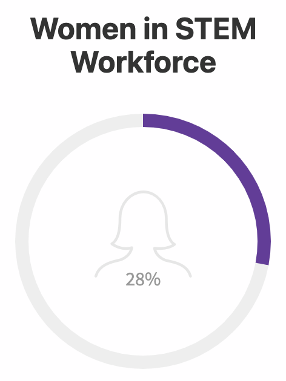
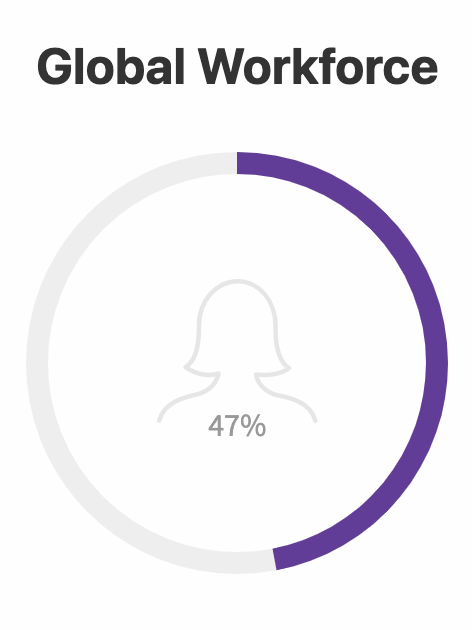
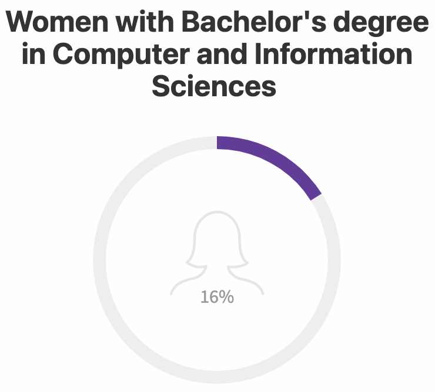
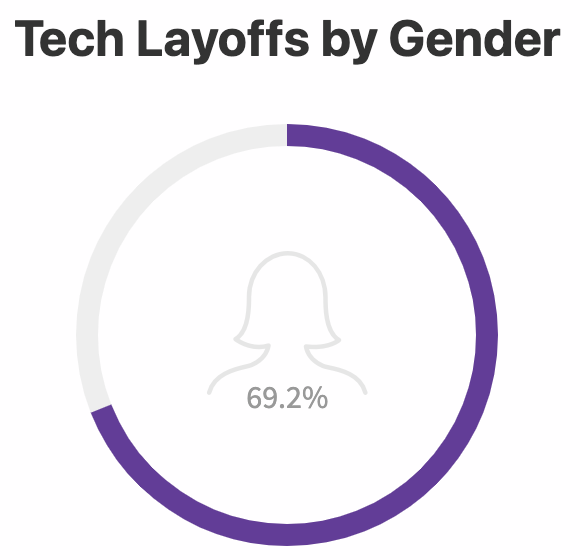
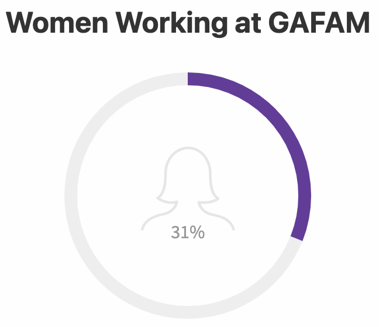
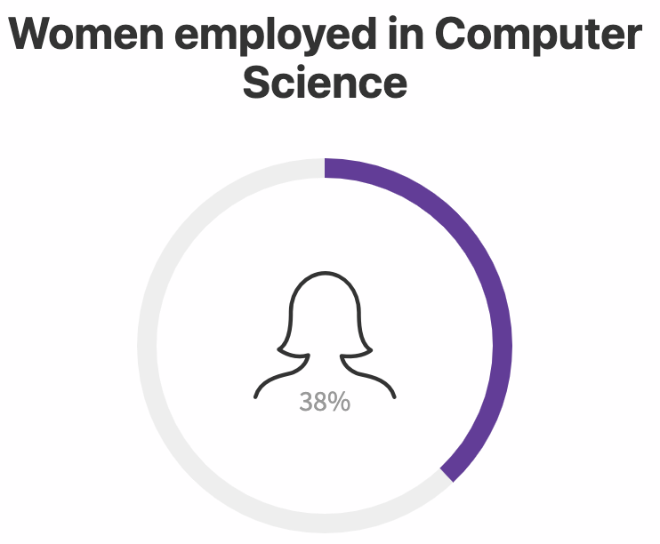
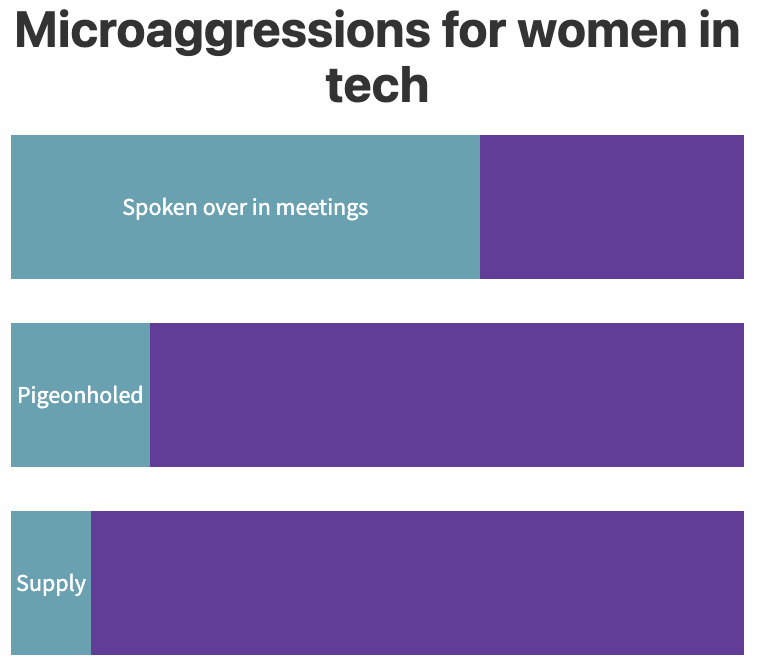
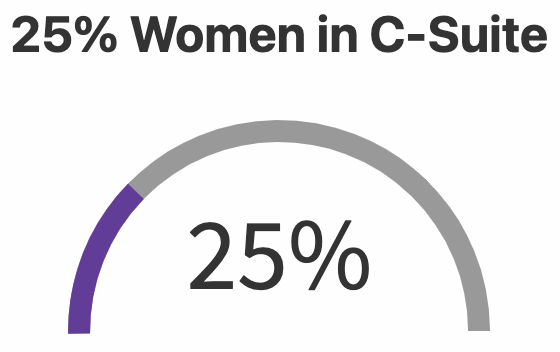
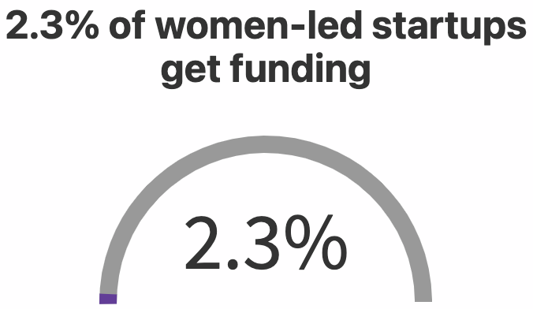

According to a report by The World Bank, women make up less than a third of the world’s workforce in technology-related fields.
Women hold 28% of all jobs in computer and mathematical occupations, and 15.9% of jobs in engineering and architecture occupations.
The United States science, technology, engineering, and mathematics (STEM) labor force represents only 23% of the total U.S. labor force.
In the European Union, women make up only 19.1% of the ICT (information and communication technology) sector.
In 2022, the percentage of women employees at Google has slightly risen to 33.9%.
Recent studies have revealed that only 47%, less than half of working-age women are participating in the global workforce, and in some countries this figure is even lower. This means that for every two men employed, there is only one woman. In addition to this, women earn less money than their male counterparts and are more likely to experience gender-based discrimination.
The majority of countries have seen an increase in female labor participation over the last decade, with emerging economies leading the way. However, progress has been slower in advanced economies due to a combination of varying economic policies and fewer incentives for women to return to work.
It is clear that increased efforts must be made in order to further empower women through improving access to education and creating meaningful employment opportunities. This will go a long way towards ensuring that every woman has the ability to realize her potential and contribute positively to society.
The gender gap in STEM fields is particularly concerning when it comes to the specific academic disciplines. Women account for a mere 16% of those who earned a Bachelor's degree in computer and information sciences, 21% of Engineering and Engineering Technology graduates, 27% with an Economics background, and 38%, Physical Sciences degrees recipients respectively..
In spite of having the same opportunities, women's enrollment in STEM courses has been dropping and only accounts for 18% of new computer science degrees. This percentage is even lower among Black or Hispanic students, as they account for a measly 6.3%. Consequently, this limits their chances to join the tech industry workforce.
According to the U.S. Bureau of Labor Statistics, STEM occupations have seen a remarkable 79% rise in the past three decades and are projected to further increase by 11% from 2020-2030.
Survey results have revealed that 65% of tech recruiters believe bias is an ongoing problem in technical recruitment. Talent retention remains a very serious issue for companies, whereas above 38% of interviewed companies want to invest more in it.
A significant majority of the women in STEM roles working at the federal level were White (66.02%). Comparatively, 14.58% were African American or Black, 9.76% Asian, 6.42% Hispanic or Latina, 0.97% Native American/Alaskan Native and 0.28 % Hawaiian or Pacific Islander heritage, respectively.
Research shows that women are 1.6 times more likely to be laid off than men, stemming from their persistent lack of seniority compared with male colleagues in the sector.
The tech layoffs in 2022 have been devastating, with the research by the WomenTech Network showing that 69.2% of those laid off were women. This figure is deeply concerning and shows the disproportionate impact of layoffs on women in tech.
The data gathered demonstrates the urgent need to take action to ensure that more equitable opportunities are available for women in tech. We must work together to create more inclusive workplaces, where women can have equal access to job opportunities and resources. In addition, initiatives such as mentorship programs, scholarships and other support systems must be put in place to help women build successful careers in tech.
We must also strive towards creating an environment of tolerance and acceptance, one that celebrates diversity and encourages open dialogue within all levels of our organizations. By working towards these goals, we can ensure that everyone has an equal chance at success in the tech industry.WomenTech network analyzed a sample of 4912 profiles from 54 tech companies.
U.S. Census data demonstrates that female workers have made enormous strides in the STEM workforce, growing from an 8% minority in 1970 to 28% of all STEM employees by 2019. Despite the progress made in 2020, there is still a considerable gender gap in the GAFAM (Google, Apple, Facebook, Amazon and Microsoft) workforce with women making up between 28% and 42%. On average only 31% of the GAFAM employees are female.
As workers progress up the corporate ladder, gender discrepancies in employment become more and more pronounced. Female representation in tech job applicant pools is highest for junior jobs. It drops for mid-level jobs and then drops again for senior-level jobs.
While software engineering jobs often have 25% fewer female applicants in their applicant pools between junior and mid-level (4 to 10 years of experience), ERP, UI/UX design, and cross-functional roles exhibit an even greater gender disparity with a drop at the senior level.
Although the number of women earning STEM degrees has increased, the retention rate for female professionals in this field is unfortunately low. NCSES research found that only 38% of women majoring in computer science were employed to work within the sector compared to 53% men, and 24% with an engineering degree continuing their career path versus 30 % males.
Women executives prioritize flexibility when contemplating joining or remaining with a company, with 48% citing it as one of the top three considerations in a WomenTech Network survey. Men leaders are slightly less likely to include this factor in their decision-making process, at 34%. Women executives are 1.5 times more likely than their male counterparts to have changed jobs because they desired a workplace that was dedicated to DE&I.
While remote and hybrid work may provide a temporary reprieve from bias, it is far from an adequate substitute for real systemic transformation. On the one hand, women are witnessing fewer microaggressions in virtual spaces; however, this should not be a cause to celebrate. Leaning on remote or hybrid models as a sole solution simply won't suffice.
WomenTech Network survey further reveals that women often experience microaggressions at work. About 64% of respondents have been spoken over during meetings, 19% have felt pigeonholed by stereotypes in various situations, and 11% have been asked to “supply the food” during meetings. Amongst other frequent microaggressions, gendered language and taking meeting minutes were referred to as “the usual” from many of the survey participants.
Despite incremental steps forward in the past decade, women—particularly those of color—are significantly underrepresented in corporate America. The situation is especially dire in senior leadership; only 25% of C-suite leaders are women, and a mere 5% represent racial minority females. Undeniably, the "broken rung" continues to be an issue for many businesses, one that makes achieving gender parity within their organizations virtually impossible.
It is undeniably true that men in STEM professions experience higher annual salaries than women - a difference of nearly $15,000 every year ($85,000 for males versus just $60,828 for females). This disparity is even more pronounced among Latina and Black women who are typically earning only around $52,000 per annum.
A study in the US showed that there was a gender wage gap of 1.6%. It also demonstrated that while women were paid less than men when working remotely, they seemed pleased to settle for $0.95 for every dollar their male colleagues requested as wages.
It also found that racial prejudice is a significant factor in the wage gap between female workers of color and white men, with Hispanic women and African-Americans expecting to make only $0.91 for every dollar their counterparts receive.
A study from 2021 foresees that it will take an astonishing 268 years to eradicate the financial gender gap, as reported by the World Economic Forum.
Women face a major roadblock when it comes to attaining senior leadership—their first step up from entry-level. The numbers are shocking; for every 100 men promoted to manager, only 87 women and 82 women of color get the same promotion. This leaves far fewer female candidates available for higher-level positions down the line, making it nearly impossible for them to ever catch up in terms of representation within these roles. Two-thirds of young women desire to further their careers if they see successful professionals with the desired work-life balance. This would help them recognize and strive for achievable goals, enabling them to move up the corporate ladder.
Women-led startups are having a daunting time obtaining venture capital funding, with only 2.3% of investment in 2020 going towards them. It's been proposed that female founders will experience more success if they approach investors who are also women - and it appears to be true since research shows that female VCs are twice as likely than male counterparts when providing money for businesses owned by women. Recent studies, however, suggest that even though female-led startups may be more likely to secure funding from women investors, these investments also bring with them the idea of preferential treatment due to gender. This then leads to further complications for female founders when seeking additional investment down the line. In other words, obtaining early funds from a woman investor could potentially make it harder in the long run for an entrepreneur to receive financing elsewhere.
Through an in-depth assessment of the latest HR and DEI standards, we have identified three distinct groups of measures to promote and maintain women's progress:
Over three-fourths of companies have already adopted table stakes, which are necessary but not sufficient to make tangible progress. Companies with a greater representation of female and minority women are more likely to adopt best practices than those that settle for baseline standards. Despite only being implemented by a fraction of companies, emerging practices have demonstrated remarkable results.
To expedite the progression towards gender equality in our society, it is imperative that organizations examine and embrace more emerging and leading strategies and establish new standards within their own operations.
Currently, women make up about 28% of the tech workforce. This is a significant improvement from the early 2000s when women only made up 9%.
In the US, there are about 3.7 million women working in tech positions (which represents only 23% of the labor force).
In Europe, there are approximately 1.7 million women working in tech positions (representing about 19.1% of the ICT labor force).